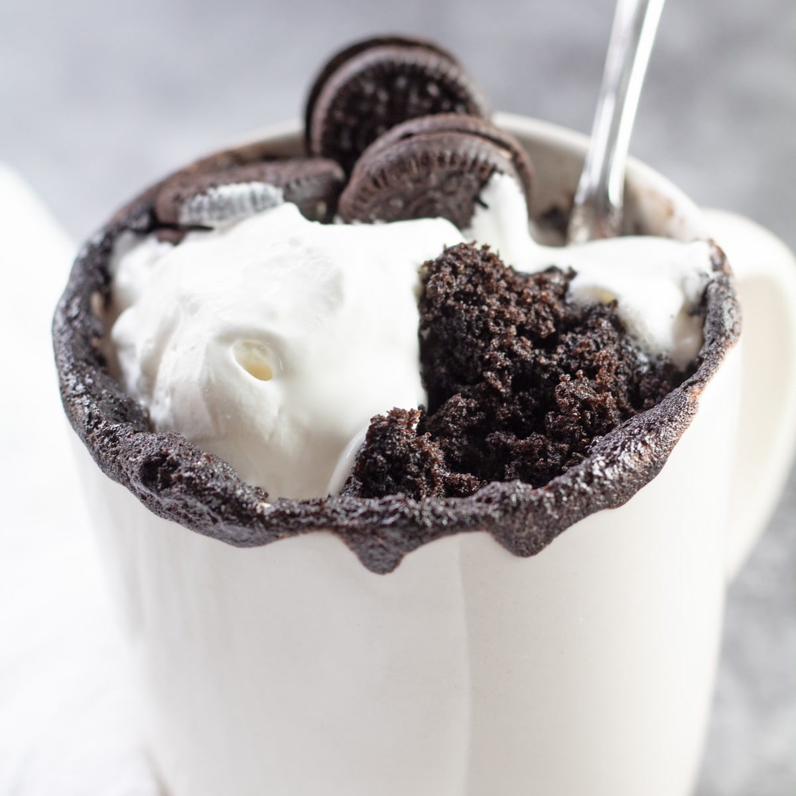

OREO MUG CAKE
INGREDIENTES
- 1 huevo
- 3 cucharadas soperas de harina
- 2 cucharadas soperas de azúcar
- 2 cucharadas soperas de cacao puro
- 2 cucharadas soperas de aceite (oliva o girasol)
- 2 cucharadas soperas de leche
- Media cucharadita de levadura química (o polvo para hornear)
- 3 galletas Oreo
PREPARACIÓN
- Lo primero será preparar la masa del mug cake. Podemos prepararla en un bol y cuando esté hecha verterla sobre la taza, o bien prepararla directamente sobre la taza. Yo me he inclinado por la primera forma, así la taza nos quedará algo más limpia.
- Ponemos el huevo y el azúcar en un bol y mezclamos bien. Agregamos la leche, el aceite, e integramos todos los ingredientes.
- A continuación tamizamos, con la ayuda de un colador, la harina, el cacao y la levadura química (o polvo de hornear). Ésto lo hacemos para que nos quede una masa aireada y sin grumos.
- Con la ayuda de una espátula integramos bien todos los ingredientes, hasta obtener una masa de bizcocho chocolateada.
- Vertemos la masa en una taza y agregamos las galletas Oreo troceadas, hundiéndolas un poco en la masa.
- Ahora llevamos la taza al microondas y cocinamos el bizcocho durante 2 minutos, a máxima potencia. En mí caso utilizo un microondas con una potencia máxima de 800W (vatios).
- Para que el bizcocho (mug cake) quede bien cocinado tenemos que poner la taza en la zona exterior del plato giratorio, ya que es la que más calienta. Si la ponemos en el centro, seguramente no se cocine correctamente en el mismo tiempo.
- Primero cocinaremos el bizcocho durante un minuto, colocando el asa de la taza hacia el interior del microondas. Después de este minuto giramos la taza (180º) apuntando el asa hacia el exterior (justo al contrario) y lo cocinamos durante otro minuto. Ésto lo hacemos para que la cocción del bizcocho sea uniforme. En total lo habremos cocinado en el microondas durante 2 minutos (1+1).
- Tras cocinar el mug cake dos minutos lo sacamos del microondas y dejamos que se enfríe para poder comerlo.